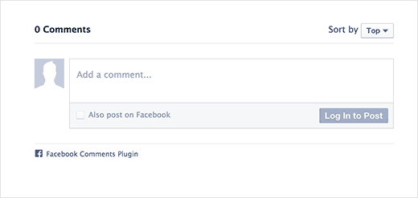

Sometimes a server just houses static HTML, CSS, and Javascript files (like this website!). HTML, CSS, and Javascript make up front-end web development.
Often, however, a web application lives on the server. If data has to be saved and displayed back to the user, it's going to require back-end web development.
For instance, Facebook has to hold onto all your and your friends' status updates and display it on your newsfeed. To do this, it stores information in a database.
The web application living on the server will make calls to the database when it needs to display specific information back to you, like your friend's latest cat photo.
If you create something new that can still be accessed later, the web application will save information to the database. i.e. When you want to leave a comment on how cute your friend's cat is.
A web application is written in a programming language. At Coder Foundry, we teach C#, but web applications can also be written in other languages such as Java, Ruby, or PHP.